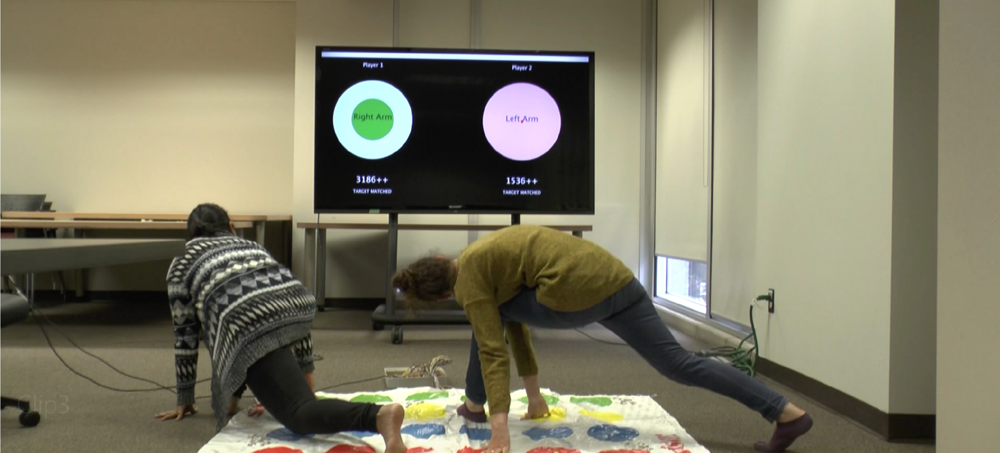
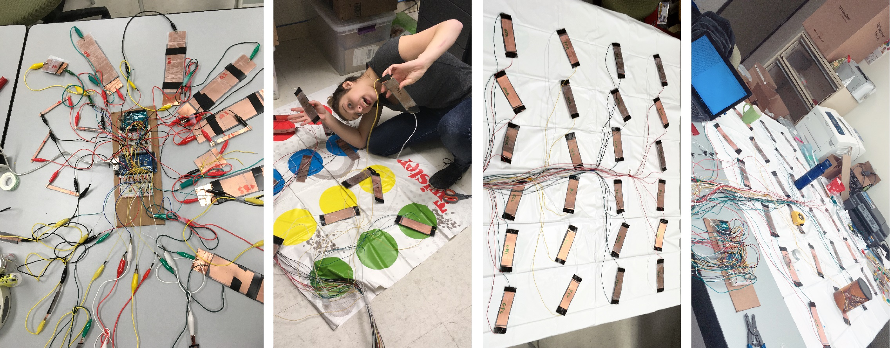
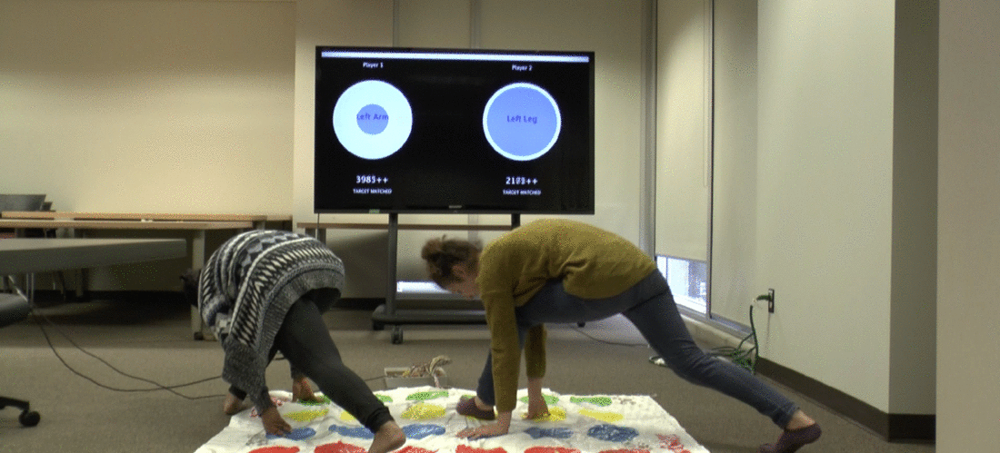

Evaluating the effect of digital augmentation on player engagement.

Quick Summary
Digital adaptation of physical games is commonly achieved by complete digitization often resulting in replacing
physical movements with virtual counterparts using input devices.
Augmenting the game by adding digital elements while also preserving physical movements can result in better
player engagement.
With , a digitally augmented version of twister, we introduce the element of time and score by using
a pressure-sensitive twister mat that communicates with a projected screen.
To investigate the effect of digital augmentation,
we conducted a comparative evaluation between the original twister and . 13/16 participants preferred over the traditional twister.
Read the detail findings about the Compeition and Social aspect of the games below.
: Game Description
We augmented the original Twister mat by making it pressure sensitive (See the next section for details of
implementation). This enables tracking the current pressing positions while preserving the original gameplay.
We offload the task of random selection to the computer and the result is displayed for
both the players on a projected screen in front of the players.
The player must reach the colour target with the suggested limb displayed on the screen, the points start to increase when the
player reaches the correct target. As soon as the combination changes, the player starts to lose points until the correct
coloured target is hit by the player. This adds the elements of time and competition to the game.
The Process of Digital Augmentation : Breaking components of the original and adding new components for the digital.
Design Rationale
We choose a whole-body game, Twister for the purpose of digital augmentation. Twister is a traditional game that has been
played since 1964, its popularity can be explained by appearance in TV shows. Over the years, people have modified the game by
adding layers like colour foam, paint, ketchup, and shot glasses on the targets to increase the complexity and engagement of
the game. This demonstrates the potential to accommodate additional layers while preserving the original structure of the game.
Building the prototype
Which involved a bit of dancing on the table.
The Pressure-Sensitive Twister Mat
Each of the 24 sensors can detect if they are being pressed and they send this data to the two Arduino Megas.
The two Arduino Megas are in the master-slave type of connection to accommodate 24 input points for these sensors.
The sensor data is received by processing through serial communication and in turn displays the relevant data on
the projected screen

With a lot of wires and a few weekends, were got these DIY pressure sensors to talk to the computer.
The Projected Screen
The projected screen comprises a circle for each player which determines the colour of the target (Red, Yellow, Green or Blue) and the text on the center suggests the limb (Right Arm, Left Arm, Right Leg, Left Leg).
The circle size reduces continuously until it disappears and the next combination of limbs and colour is displayed.
The display screen gives feedback if the scores are increasing or decreasing and if the target is matched or the player is
on the wrong target.

game in action.
User Study
We conducted a within-subject comparative evaluation with 16 participants. They played the original Twister as a
control condition and as the experiment condition. We had two participants playing together for each session.
Data Collection and Analysis
Our questions comprised of 15 five-point likert scale questions for each condition. At the end of the interview,
we asked a set of open-ended questions.
The likert questions were based on the Game Experience Questionnaire, where we selected the themes that were relevant to the traditional game
and . The high level themes were Challenge, Competition, Positive, and Negative emotions. To cover the social aspect of the game, we looked
further into the literature to include questions about camaraderie and connection with the other.
At the end of the questionnaire, we had open-ended questions that covered the role of the digital augmentation on the engagement
of the participants. We also asked their preference between the two games and design suggestions for the digital game.
Results
Overall, 13/16 (81.25%) participants preferred over the traditional twister. To test if the digital augmentation has an effect on each
of the 5 themes, we performed a repeated measure two-way ANOVA with the game condition ( and Twister) as the within subject factor and
order of condition as the between subject factor.
Competitive v/s Social
There was a significant effect of digital augmentation on the Social and Competition theme. had significantly better score in competition theme
and the original Twister had better score in the Social theme. The nature of play and engagement was different in the two games. Hence, digital
augmentation had an influence on gameplay and engagement.
P4: “I like the score of the digital game. I like to be able to tell who’s winning through the game”
Publication & Presentation
Tangible and Embodied Interaction 2019, Tempe, Arizona, USA (Accepted)